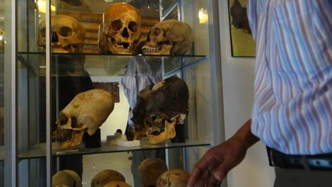
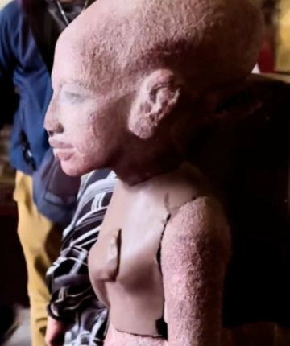
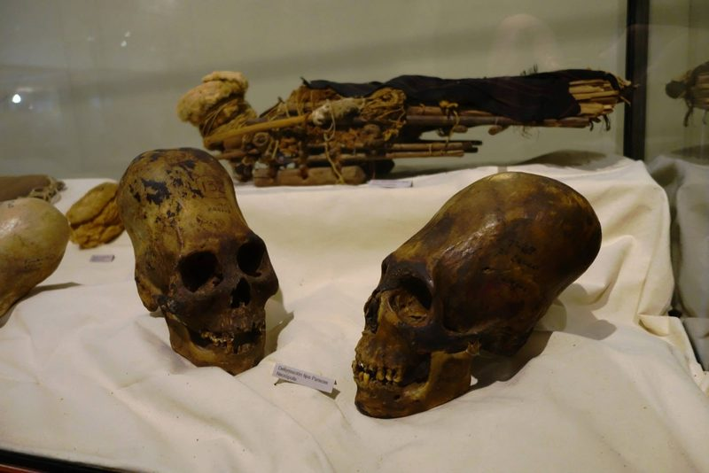

Что рассказывают черепа?

На боковой стороне черепа чернилами написано MRI DB. Могут ли несколько букв рассказать, откуда этот череп и где хранятся сведения о нём? Эта страница следует по следу так далеко, как позволяют изученные источники.

Как собирался материал
«Я объехал весь земной шар, и вот я держу в руках череп Starchild 2.»
- Перу, 1 ноября 2014 года. Jani фотографировал удлинённые черепа в перуанских музеях и в частной коллекции. Фото 01 и 03–11 сделаны во время этой поездки; на фото 03 и 04 череп держит сам Jani. В видео Travel South владелец коллекции рассказывает о своих черепах, Starchild 2 представлен по имени, а в подсобном помещении одного из музеев съёмку специально разрешили. Фото 02 — подборка кадров из этих видео.
- Каир, 15 февраля 2024 года. В Египетском музее он увидел каменные головы, свод черепа которых точно так же далеко вытянут назад.
- Архив 2026 года. Были просмотрены фотографии, видео и открытые источники: путеводители по музеям, карточки предметов и исследования.
Три вопроса
- Куда ведёт код на черепе? Написанный чернилами MRI DB и карточки предметов музея.
- Почему он называется Starchild 2? Название заимствовано у более известного черепа из Мексики.
- Почему удлинённая голова повторяется в каменных изображениях Каира? Искусство Амарны и перуанские черепа рядом.
По пути: витрина с тремя головами с сохранившимися волосами, рассказ владельца коллекции и что говорят исследования. Все одиннадцать фото с наблюдениями — в указателе фото в конце.
Черепа на фотографиях — это человеческие останки. Эта страница сообщает только то, что видно на фотографиях и в текстах экспозиции, и то, что говорят опубликованные исследования. Фотография не может рассказать о возрасте, болезнях или происхождении умершего.
Фото 01 и 03–11 — фотографии Jani Korpi из Перу 2014 года, сделанные во время той же поездки, что и видео из музеев, снятые 1 ноября 2014 года. Фото 02 — подборка кадров из этих видео. Год установлен по исходным именам файлов видео (20141101…): расстановка на фото 01 и 08 выглядит идентично в видео _IlZYy2Mbpk и qlPq2wTEFEc, а в перуанских видео Travel South 2011 года нет съёмок черепов или музеев. «Слева» и «справа» означают с точки зрения зрителя. Один и тот же предмет может появляться на нескольких фотографиях.
Как читать метки
- T
- Результат исследования
- A
- Рассказ хроники или иной документ
- L
- Легенда или рассказ
- S
- Предположение
Посмотрите, как из формы черепа родился воображаемый персонажЛица каменного города: 13 пар изображений. ИИ-иллюстрация, вымысел, а не исследование.
Старая фотография, новый вопрос для поиска: куда ведёт MRI DB?

- Что видно на фото. На боковой стороне правого черепа от руки написаны MRI DB и ряд цифр. Число, возможно, похоже на 3421, но конец неясен, поэтому прочтение остаётся открытым.
- Сравнение с музейными материалами. A На странице 25 отчёта García Soto 2018 года приведена карточка предмета из регионального музея Ики. В графе «Otros códigos e inscripciones» указано MRI-DB-3869. Череп с карточки находится в Museo Regional de Ica «Adolfo Bermúdez Jenkins», место находки записано как Hacienda Chongos, а другой код — как MRI-01050-12 [2].
- Результат. Найдено совпадение формата кода: тот же префикс MRI-DB используется на карточках предметов музея Ики. Индивидуальное совпадение остаётся открытым. Номера не совпадают, и один лишь префикс не идентифицирует череп, сфотографированный Jani, и не связывает его с результатами ДНК из отчёта.
- Следующий вопрос. Подтвердить полный номер по более чёткой фотографии и найти соответствующую каталожную карточку музея.
Три места держатся отдельно. Черепа отчета и записи об объектах поступают из регионального музея Ика [2], который является другим учреждением , чем музей Наварро . [3]- Я не знаю . Экспозиция из трех голов с сохранившимися волосами и отчет владельца коллекции принадлежат музею Наварро в Паракасе (витрина)). Название задней комнаты не показано на видео (Задняя комната)). Где была сделана фотография 08 не подтверждена, и идентификация одного места не идентифицирует весь материал. Обратный поиск изображений со всеми фотографиями черепа Джани (20 ноября 2026 года) не нашел одинаковых витрин или ярлыков нигде в Интернете. Снимок на TripAdvisor из музея Наварро показывает стеклянную витрину того же типа, что и в Фото 07, но те же черепа не могут быть идентифицированы в нем [20].
Витрина с тремя головами с сохранившимися волосами
В видео Jani dNgc018HQNA три головы лежат на отдельных стеклянных подставках. Тёмный материал, похожий на волосы, окружает бок левой головы. Средняя — удлинённый светлый череп с тёмным участком волос на своде. Правая тёмная голова, меньше остальных, стоит на собственной подставке.
На странице 175 путеводителя по музеям 2023 года Министерства культуры Перу показаны три очень похожие на вид головы в том же порядке на стеклянных подставках. Видео снято в Museo Histórico Paracas «Juan Navarro Hierro» в Паракасе. Путеводитель представляет музей под этим названием, и им управляет семья Наварро [1]. Jani Korpi подтвердил место съёмки в 2026 году. Региональный музей Ики — другое учреждение [3]. Путеводитель не подтверждает ни родства, ни общей могилы, ни того, где сделаны остальные фотографии. Освещение и ракурс отличаются от фото в путеводителе.

Рассказ владельца коллекции
L В видео dNgc018HQNA (снят 1 ноября 2014 года) рассказчик является владельцем коллекции в Museo Histórico Paracas Juan Navarro Hierro. По его словам, коллекция является национальным достоянием, но принадлежит ему. Он говорит, что один череп не из Америки и утверждает, что его ДНК соответствует Северной Европе: Норвегии, Швеции, Финляндии или России. О витрине с тремя головами с сохранившимися волосами он говорит, что отец, мать и ребенок были найдены в одной могиле, и что волосы отца и матери были красными, а ребенка - светлыми. В видео владелец не показывает отчет о исследовании, лабораторию или код образца.
Есть ли код для человека на фотографии? Ничего не было найдено. Никакой читаемый код не виден на головах в витрине, и в руководстве музея не упоминается о исследовании ДНК [1]- Я не знаю . В отчете Гарсиа Сото один череп из разграбленной могилы в Серро Колорадо (S8) показал митохондриальную группу H, которая, согласно отчету, типична для Северной Европы. Митохондриальная ДНК, однако, прослеживает только одну материнскую линию, а гаплогруппа H одна не помещает человека в Северную Европу: она также распространена, например, в Северной Африке (Ennafaa и др. 2009)). Второй образец из того же черепа показал группу В5 [2]- Я не знаю . Различные результаты для одного и того же черепа требуют объяснения. Доклад не подвергается рецензированию, не было получено радиоуглеродного датирования, и он не демонстрирует, что ДНК является подлинно древней; современное загрязнение является распространенным объяснением в таких образцах и должно быть исключено (Renaud и др. 2019)). Черепа отчета находятся в хранилище регионального музея Ика, и ни один из них не может быть связан с головами в этом витрине.
Названия видео в форме вопросов, например «Ancient Skulls of Peru: Evidence of an Advanced Human Species?» (aqPy1X1mhGY) и «Ancient Skulls of humanoids: Proof of an Advanced Human Species?» (yIA-Dykw_40), — это названия видео S . Опубликованные исследования не подтверждают идею отдельного вида людей: в изученных материалах Паракаса черепа принадлежат людям, чьим головам придавали форму в детстве [4].



Starchild 2 и подсобное помещение
L В коллекции и в видео Jani Investigating the Starchild 2 skull of Peru (Nov 2014) широкий круглый череп называют Starchild 2. Название заимствовано у другого, более известного черепа из Мексики. Эти два черепа лучше не смешивать:
Starchild 1 · Мексика
- Источник названия
- Череп позже стал называться Черепом Звездных Детей . [7]- Я не знаю . Его прославил американский автор и исследователь паранормальных явлений Ллойд Пай (1946–2013), который привлек внимание общественности к черепу в конце 1990-х годов и представил его в течение многих лет как гибрид человека-инопланетянина. [14]- Я не знаю . Пай возглавлял проект Starchild, который в своих собственных текстах описывается как неформальная исследовательская группа, которая координирует исследования с февраля 1999 года. [15]- Я не знаю . Официальный сайт Пай lloydpye.com все еще работает. [16].
- Известное происхождение
- L Согласно истории, череп был найден в начале 1930-х годов в районе Чиуауа в Мексике [7]. История находки не является результатом исследования.
- L Согласно рассказу самого проекта, в 1930-х годах американская девочка-подросток нашла два скелета в заброшенной шахтной штольне в районе Медного каньона и унесла два черепа домой в Эль-Пасо. В 1998 году черепа передали Ray и Melanie Young, которые пригласили Pye присоединиться. По данным проекта, радиоуглеродное датирование определило возраст черепа примерно в 900 лет [15].
- Исследовательские данные, связанные с индивидом
- A В статье в журнале "Skeptical Inquirer" обобщены два теста ДНК, проведенных в 1999 и 2003 годах, согласно которым череп принадлежит человеку. [7]- Я не знаю . Для анализа 2003 года был прочитан текст, опубликованный в Интернете. Подписанный оригинальный отчет и подлинность копии не были проверены, поэтому в следующем абзаце описывается содержание этой копии.
- A Лабораторный отчёт Trace Genetics от 12 августа 2003 года, текст которого опубликован в интернете как копия материалов проекта: митохондриальная ДНК образца черепа Starchild (SCS-1) в двух отдельных экстракциях соответствовала индейской гаплогруппе C, а образец второго черепа, представленного вместе с ним (SA-1), — гаплогруппе A. Согласно отчёту, разные типы мтДНК исключают отношения «мать — ребёнок», а матери обоих, вероятно, были коренными американками. Ядерную ДНК из образца Starchild амплифицировать не удалось [17]. Подписанный оригинал для просмотра недоступен.
- L Согласно собственному отчёту проекта 2011 года, неназванный генетик секвенировал четыре фрагмента мтДНК, и проект истолковал отличия от человека как необычно большие. Согласно отчёту, часть исследователей пока остаётся анонимной [15]. Результат не опубликован в рецензируемом виде, поэтому здесь это утверждение проекта.
Starchild 2 · Перу
- Источник названия
- L Коллекция и рассказчик в видео, Travel South, 1 ноября 2014 года.
- Известное происхождение
- Перуанская коллекция. Jani сфотографировал череп (фото 04) и снял его на видео 1 ноября 2014 года. Место находки неизвестно.
- Исследовательские данные, связанные с индивидом
- Поиск, проведённый для этой страницы, не выявил ни одного опубликованного исследования, которое можно было бы проверяемо связать с этим индивидом. Результаты ДНК мексиканского черепа нельзя переносить на этот череп.
Единственное, что объединяет эти два черепа, — название.
В тот же день, 1 ноября 2014 года, Jani с разрешения снял подсобное помещение другого музея, где на белой ткани лежат черепа и завёрнутые тела умерших (qlPq2wTEFEc). Название места в видео не показано. Расстановка на фото 05 и 09, вероятно, та же.


Каир 2024: похожие удлинённые головы в Египте
15 февраля 2024 года в Египетском музее в Каире Jani сфотографировал каменные головы, свод черепа которых далеко вытянут назад. Форма напоминает перуанские черепа, но снимки сделаны на другом континенте и примерно на девять лет позже перуанских фотографий черепов (2014).
Рядом: скульптура и человеческие останки





На что смотреть: на изгиб свода черепа, линию лба и на то, как далеко затылок выступает за ухо. Снимки сделаны с разных направлений и расстояний, поэтому точные пропорции сравнить нельзя.
Долгая корона - это художественная конвенция или настоящая форма головы? A Описание объекта Египетского музея в Берлине отвечает: согласно нему, задом наперед удлиненные головы дочерей являются чисто стилистическим устройством, а не признаком наследственных или намеренно произведенных деформаций [13]. A Согласно выставочной публикации Метрополитен-музея, историки искусства считают, что Амарнские художники преувеличивали совершенно обычные физические черты по стилистическим причинам [19].

T Искусство амарнского периода изображает дочерей фараона Эхнатона с удлинёнными головами. По данным Global Egyptian Museum, кварцитовая голова JE 44869 из каирского музея — вероятно, Меритатон, старшая дочь Эхнатона, и она была найдена в 1912 году в мастерской скульптора Тутмоса [11]. Голова царевны того же типа находится в Метрополитен-музее в Нью-Йорке [12]. Согласно путеводителю каирского музея, высота JE 44869 — 21 см, и она выставлена в зале 3 на первом этаже [18], а ещё одна голова царевны из той же мастерской, JE 44870 (жёлтый кварцит, 19 см), также находится в Каире [19]. На фото Jani две головы стоят рядом, но их соответствие этим двум предметам подтвердить нельзя. Номера предметов на фотографиях Jani не различимы, поэтому точная идентификация снятых им голов остаётся открытой.
Смотрите в видео: две каменные головы, на 51:22 · экскурсия по музею с 51:31 (Travel South: Exploring the Egyptian Museum in Cairo, снято 15 февраля 2024 года). Перуанская параллель: Investigating Elongated Skulls in a Peruvian Museum (снято 1 ноября 2014 года).
Связь с Перу лишь визуальная. Головы из Амарны — скульптуры, перуанские черепа — человеческие останки; в изученных материалах Паракаса удлинённую голову истолковали как результат придания формы в детстве (научный контекст). Каирские фотографии сделаны в 2024 году, перуанские — в 2014 году. ИИ-иллюстрации этих пар находятся на странице каменного города: пара 12 и пара 13 (Каменные лица Каира и черепа Перу).
S Что бы вы стали исследовать?
Фотографии вызывают вопросы, которые задают многие зрители. Здесь они собраны как предположения, и для каждого указано, какие данные могли бы его решить.
- Удлинённые черепа — это другой вид?
- Понадобились бы код образца, связанный с индивидом, каталожная карточка и опубликованный анализ скелета и генома в сравнении с человеческим материалом. В изученных материалах Паракаса черепа человеческие [4].
- Что рассказала бы ДНК?
- Первый шаг — код образца, который связывает именно этот череп с лабораторным отчётом. Без него результат ДНК, о котором говорится в видео (рассказ владельца), остаётся рассказом.
- Стояла ли за этим развитая цивилизация?
- Понадобились бы контекст находки, датировка и артефакты, опубликованные проверяемым образом. Воображаемая версия раскрыта в рассказе Лица каменного города, и это вымысел.
Какие выводы можно сделать из исследований?
| Тема | Что говорят исследования | Источник |
|---|---|---|
| Придание формы черепу в Паракасе | T Среди умерших Паракас-Кавернас (Серро-Колорадо, около 550–200 гг. до н. э.) была классифицирована форма черепа 159 индивидов. Изменение формы наблюдалось у 98 процентов, а самым распространённым типом была вертикальная табулярная форма. Цифра относится к умершим из этого исследования, а не ко всему населению. | [4] |
| Форма нёба и свода черепа | T 19 черепов взрослых из Перу из собрания Музея антропологии и этнологии Флорентийского университета, 9 с изменённой формой и 10 без изменений. Форма верхней части черепа у групп различалась; средняя форма нёба значимо не различалась. Исследование касалось нёба, а не внешности лица, и выборка была небольшой. | [8] |
| ДНК региона | T 218 индивидов из района Пальпы, полуострова Паракас и высокогорья, около 800 г. до н. э. — 800 г. н. э. Результат по кодирующей области получен для 130 индивидов, последовательность контрольной области — для 104. Население культуры Наска генетически было близко к предшествовавшему населению Паракаса. Популяционные данные не говорят о происхождении умершего на отдельной фотографии. | [10] |
| Отчёт 2018 года | A Заключительный доклад Гарсиа Сото: восемь черепов из хранилища регионального музея Ика, 30 образцов, из которых пять дали результат. Радиоуглеродные датировки не были получены. Результаты (таблица 3): B4 из двух черепов, H и R из одного, H и B5 из разных образцов черепа S8. В трех образцах ДНК была слишком деградирована, а один не был проанализирован. Автор призывает к дальнейшему анализу. Это отчет, а не рецензируемая статья. Никакой связи с людьми на фотографиях Джани не было найдено. | [2] |
| Отверстия и маленький череп | T Как появилось отверстие в черепе, возраст умершего и причина формы остаются открытыми из фотографии. Открытие может быть сделано людьми с помощью хирургической процедуры, трепанации, но подобные открытия также вызваны врожденными аномалиями, травмами, инфекциями, опухолями и повреждением почвы. Чтобы отличить их, нужно исследовать кость. | [6] |
| Название Starchild | A Название происходит от черепа из предполагаемой находки в районе Чиуауа в Мексике. Согласно статье в Skeptical Inquirer, два теста ДНК 1999 и 2003 годов показали, что это человеческий череп. Для перуанского Starchild 2 не найдено ни карточки предмета, ни исследования, которые связывали бы с ним этот результат. | [7] |
Что потребуется для подтверждения личности? S Наиболее сильным кандидатом является правосторонний череп на фото 08 (отслеживание)). Острое приближение всего кода или записи каталога музея может связать фотографию с местом нахождения и образцом кода. Без этой связи возраст, датировка, родство и результат ДНК остаются открытыми.
Что исследуют по этой теме в 2026 году?
Два исследования, опубликованные в этом году, показывают, куда движется изучение изменения формы черепа.
- TWard et al., iScience 2026. Исследователи собрали набор данных из 1772 случаев намеренного изменения формы черепа в Америке и изучили их временные и географические закономерности. Согласно моделированию, практика впервые появилась в Центральной Америке, а затем распространилась в Северную и Южную Америку. Кольцевая форма появилась в регионах, где табулярная уже существовала, и быстро распространилась [9].
- TOxilia et al., Applied Sciences 2026. Трёхмерный анализ формы 19 перуанских черепов (9 с изменённой формой, 10 без изменений): форма мозговой коробки у групп явно различалась, форма нёба — нет. В этих черепах изменение формы, таким образом, проявилось в мозговой коробке, но не в средней форме нёба [8].
Ни одно из исследований не идентифицирует индивидов, сфотографированных Jani, и не показывает связи между Египтом и Перу. Результат Oxilia также не подтверждает лица иллюстрированных персонажей на странице каменного города: они вымышлены.
Указатель фотографий: фото 01–11
Для каждой фотографии сначала показано самое интересное наблюдение. Остальные детали открываются в разделе «Другие наблюдения».
01 Круглый череп спереди

Верхняя часть и глазницы
Верхняя часть черепа широко изгибается в обе стороны. Видны обе глазницы, но на фото нет нижней челюсти и значительной части нижней части лица. Это меняет видимую пропорцию между головой и лицом.
Другие наблюдения
Сравнение с фото 04 и 10
Круглый контур, сохранившаяся область глазниц и отсутствующая нижняя часть лица согласуются друг с другом. Общего видимого кода предмета на фотографиях нет, но фото 01, 04 и 10, вероятно, показывают один и тот же предмет с трёх сторон.
Предыстория названия Starchild
Тот же предмет, вероятно, появляется и в видео Jani _IlZYy2Mbpk, в названии которого череп назван Starchild 2. Оригинальный череп Starchild связывают с Чиуауа в Мексике, и два исследования ДНК (1999 и 2003) показали, что это человеческий череп [7]. Карточки предмета для перуанского черепа, которая связывала бы его с тем случаем или подтверждала прозвище, не найдено.
Иллюстрация 01: Оптик настраивает призму (ИИ-иллюстрация, вымысел)
02 Два удлинённых черепа в видеоподборке

Верхний ряд и левый кадр среднего ряда
Четыре кадра из видео aqPy1X1mhGY показывают один и тот же светлый высокий череп с нескольких сторон. Нижняя челюсть видна. При взгляде сверху лучше видны форма свода черепа и часть, уходящая за лоб.
Другие наблюдения
Второе видео
В двух правых кадрах среднего ряда и двух левых кадрах нижнего ряда источник — видео yIA-Dykw_40. Более тёмная поверхность, иной боковой профиль и видимые зубы помогают следить за предметом от кадра к кадру. Вероятно, это другой череп, чем в верхнем ряду.
Правый нижний угол
Третье видео — dNgc018HQNA. Человек держит светлый череп. По кадру нельзя решить, тот ли это череп, что один из двух других. Поэтому девять кадров изображения не означают девять индивидов.
Иллюстрация 02: По переулку везут груз камня (ИИ-иллюстрация, вымысел)
03 Удлинённый череп в руках
Предмет на фото
Светлый череп держат в руках боком. Лицо и зубы направлены вправо. Затылок далеко выступает за лицо и загибается вверх. Пальцы закрывают часть виска и щеки.
Другие наблюдения
Связь с остальным материалом
На последнем кадре фото 02 виден похожий светлый череп в руках. Сравнение не выявляет общего индивидуального кода.
Что даёт масштаб
Руки помогают оценить размер предмета. На фото нет масштабной линейки и трёхмерного измерения, поэтому объём или размер мозга остались бы догадками.
Иллюстрация 03: Камнерезчица проверяет шов (ИИ-иллюстрация, вымысел)
04 Круглый череп в руках: Starchild 2
Предмет на фото
Jani Korpi держит обеими руками светлую круглую часть черепа. Она наклонена к камере, и глазницы видны под углом.
Другие наблюдения
Идентификация
Форма и отсутствующие части лицевой области напоминают предмет на фото 01 и 10. Ладони дают лучшее представление о масштабе, чем крупный план, снятый на столе.
Что остаётся открытым
Размер ладоней и перспектива не говорят о возрасте умершего. По фото нельзя сказать, детский ли это череп и вызвана ли форма какой-либо болезнью. Исследовательской или каталожной карточки индивида нет. Коллекция называет череп Starchild 2 (Starchild 2 и подсобное помещение).
Иллюстрация 04: Садовник рассматривает семенной стручок (ИИ-иллюстрация, вымысел)
05 Тёмный череп сбоку

Тёмный череп на переднем плане
Профиль лица направлен влево, а затылок загибается вправо. Вид сбоку показывает длину лучше, чем вид спереди. Никакой опознавательной метки на этом фото надёжно не различить.
Другие наблюдения
Более светлый череп позади
На своде черепа видны неровные тёмные пятна. Похожий узор виден на левом черепе на фото 09. Подставка экспозиции и предметы на заднем плане тоже напоминают расстановку на фото 09, так что это, вероятно, та же экспозиция.
Отражение в стекле
Размытые профили слева — отражения в стекле. Их нельзя считать дополнительными индивидами. Цвет освещения и отражения также влияют на восприятие оттенка поверхности.
Илюстрация 05: Водостой измеряет уровни канала (Илюстрация искусственного интеллекта, художественная фантастика)
06 Два черепа на одной полке

Светлый череп слева
Задняя часть черепа загибается по диагонали вверх. Череп стоит на чёрной подставке. Маленькая табличка с текстом впереди в основном слишком размыта, чтобы её прочитать.
Другие наблюдения
Череп с тёмной поверхностью справа
По сравнению с левым контур свода черепа более вертикальный. Нижняя челюсть различима. Под областью уха видно написанное от руки число 161. Чтобы выяснить его значение, понадобился бы реестр коллекции.
Кто что утверждает
Рядом с правым черепом стоит табличка экспозиции. Классификация на табличке принадлежит самой экспозиции и не говорит о месте находки индивида. В стекле также видны отражения.
Иллюстрация 06: Ткачихи рассматривают ткань (ИИ-иллюстрация, вымысел)
07 Три черепа на одной полке

Левый череп
Высокий светлый свод черепа и узкая лобная область. Видны глазницы, носовое отверстие и зубные дуги.
Другие наблюдения
Средний череп
По сравнению с соседними череп маленький. Его подняли на отдельную прозрачную подставку. На своде есть отверстие, край которого виден. Фотография не показывает ни того, как образовалось отверстие, ни возраста умершего. Чтобы выяснить причину отверстия в черепе, нужно исследовать кость, поскольку похожие отверстия могут вызывать также врождённые аномалии, травмы, инфекции, опухоли и повреждения в грунте [6].
Правый череп
Боковой профиль обращён влево, а затылок заполняет правый край фото. Различимы скуловая дуга и ряды зубов. Фото не даёт никаких сведений о родстве трёх индивидов. Это иная компоновка, чем витрина с тремя головами с сохранившимися волосами, представленная ниже.
Иллюстрация 07: Встреча на кукурузном рынке (ИИ-иллюстрация, вымысел)
08 Два черепа и рукописные коды
Левый череп
На светлом черепе есть надпись, обведённая красным, а на боковой стороне лба видна чёрная надпись. Конец надписи похож на число 18, но прочтение всей надписи неясно.
Другие наблюдения
Правый череп
На боковой стороне головы различим написанный от руки код, начинающийся с MRI DB. Ряд цифр, возможно, похож на 3421, но конец лучше оставить открытым. Надписи видны и на своде черепа.
Сравнение с реестрами
Тот же префикс MRI-DB встречается на карточках предметов из Ики в отчёте García Soto, например надпись MRI-DB-3869 на странице 25 отчёта [2]. В списке и иллюстрированных карточках отчёта надёжного соответствия этому черепу не найдено, поэтому место находки или данные ДНК из отчёта нельзя приписать ему (поиск).
Илюстрация 08: Два строителя несут стеклянный навес через ворота (Илюстрация искусственного интеллекта, художественная фантастика)
09 Текст экспозиции Paracas Necrópolis
Более узкий левый череп
Профиль вертикальнее, чем у правого, а на поверхности неровный тёмный узор. Положение позволяет видеть обе глазницы. Череп напоминает задний череп на фото 05.
Другие наблюдения
Более тёмный правый череп
Затылок сильно загибается назад. На поверхности есть сделанные от руки надписи. Нижняя челюсть и ряд зубов различимы сбоку. Вероятно, это тот же череп, что на переднем плане фото 05.
На табличке есть слово tipo
Табличка называет тип. Одно лишь её расположение не показывает, к какому черепу она относится и из какой могилы происходит индивид. Некрополь Вари-Каян, который Julio C. Tello раскапывал в 1927–1928 годах, — отдельный, документированный памятник [5].
Та же экспозиция в музейном видео Jani
Горизонтальное основание из связанных палочек видно и на обложке музейного видео Jani Investigating Elongated Skulls in a Peruvian Museum (Nov 2014) (обложка на странице каменного города). Общая деталь помогает опознать витрину, но место находки и принадлежность предметов остаются открытыми.
Иллюстрация 09: Песня водяного колеса (ИИ-иллюстрация, вымысел)
10 Круглый череп сбоку

Вид сбоку
На фото виден зубчатый шов, идущий от свода вниз по боковой стороне. Под ним виден край глазницы. Челюсти и зубов на фото нет.
Другие наблюдения
Что добавляет ракурс
Круглая верхняя часть предмета, лежащего на чёрной подставке, видна сбоку целиком. Вместе с фото 01 она показывает, насколько по-разному выглядит одна и та же форма спереди и сбоку. Предмет, вероятно, тот же, что на фото 01 и 04.
Пределы индивидуальных данных
На фотографиях нет ни таблички с местом находки, ни даты, ни номера в реестре. Видимость швов, размер сохранившейся верхней части или отсутствие нижней челюсти сами по себе не решают вопросов о возрасте, причине формы или связи с другими индивидами.
Иллюстрация 10: Флейтист в каменном переулке (ИИ-иллюстрация, вымысел)
11 Вся витрина, полка за полкой

Верхняя полка
Слева череп, видимый под углом; посередине высоко поднимается верхняя часть черепа; справа более тёмный профиль, часть лица которого выходит за кадр.
Другие наблюдения
Вторая полка
Справа очень тёмная голова, у которой различимы зубы. Слева видно отражение фотографа. Использованный способ сохранения по поверхности определить нельзя.
Третья полка
Слева светлый округлый профиль; посередине светлый череп, далеко вытянутый назад; справа желтоватый череп на чёрной подставке. В стекле отражаются формы, находящиеся позади.
Четвёртая полка
В задней части левого предмета видно угловатое отверстие. Средний обращён к камере затылком. Над лицом правого — тёмное отверстие. Как образовались отверстия, остаётся открытым [6].
Пятая полка
Слева коричневый боковой профиль; средний, оранжеватого оттенка, обращён к камере. Справа в верхней части светлого черепа видно тёмное отверстие.
Шестая полка
Слева на светлой поверхности видны небольшие тёмные пятна. Над лицом среднего — более крупное отверстие. Справа удлинённый желтоватый череп виден наискосок спереди.
Нижняя полка
Коричневый череп слева, красновато-коричневый посередине и светлый справа стоят в переднем ряду. Нижний край полки плотно обрезан кадром. Индивидуальные коды надёжно прочитать нельзя.
Иллюстрация 11: Обмен корзинами в городе террас (ИИ-иллюстрация, вымысел)
Источники
- Министерство культуры Перу: Guía de museos e instituciones museales del Perú 2023, с. 175 (Museo Histórico Paracas «Juan Navarro Hierro»). Открыть источник
- García Soto, Rubén 2018: Proyecto de investigación arqueogenético de cráneos Paracas Cavernas y Paracas Necrópolis de las colecciones del Museo de Sitio de Paracas y del Museo Regional de Ica. Informe final, Lima. Отчёт, а не рецензируемая статья. Таблицы 1 и 3, карточка предмета с. 25. Открыть источник
- Министерство культуры Перу: Museo Regional de Ica «Adolfo Bermúdez Jenkins», информационная страница музея. Открыть источник
- Gómez-Mejía, J., Aponte, D., Pezo-Lanfranco, L. & Eggers, S. 2022: Intentional cranial modification as a marker of identity in Paracas Cavernas, South-Central Coast of Peru. Journal of Archaeological Science: Reports 41, 103264. Открыть источник
- Arqueología Paracas – Wari Kayan: Acerca de las Necrópolis de Wari Kayan (страница исследовательского проекта). Открыть источник
- Verano, John W. 2016: Differential diagnosis: Trepanation. International Journal of Paleopathology 14, 1–9. Открыть источник
- Radford, Benjamin 2018: ’Alien’ Mummy Identified By DNA. Skeptical Inquirer 42(4), июль–август 2018, с. 10–11 (на английском). Открыть источник
- Oxilia, G., Paternostro, F. et al. 2026: Palatal Morphology in Artificially Modified Crania: Evidence for Limited Craniofacial Integration. Applied Sciences 16(17), 8695. Открыть источник
- Ward, S. M., Sánchez-Villagra, M. R., Raymond, C., Lazaro, G. R., Lynch, S. & Wilson, L. A. B. 2026: Intentional cranial modifications in the Americas: The temporal and spatial patterns of potential transmissions and cultural innovations. iScience 29(5), 115643 (на английском). doi:10.1016/j.isci.2026.115643 · PMC13141071
- Fehren-Schmitz, L., Reindel, M., Tomasto Cagigao, E., Hummel, S. & Herrmann, B. 2010: Pre-Columbian population dynamics in coastal southern Peru. American Journal of Physical Anthropology 141(2), 208–221. Открыть источник
- Global Egyptian Museum: Head of a princess, JE 44869 (на английском). Открыть источник
- The Metropolitan Museum of Art: Head of a princess from a group statue, 547692 (на английском). Открыть источник
- Ägyptisches Museum und Papyrussammlung, Berlin: House altar, Akhenaten, Nefertiti and their three daughters, ÄM 14145 (Google Arts & Culture, на английском). Открыть источник
- Wikipedia: Lloyd Pye (на английском, дата обращения 20 ноября 2026 года). Открыть источник
- Johnson, Andrew (ред.) 2015: The Starchild Skull. Составлено по текстам Lloyd Pye (starchildproject.com, lloydpye.com), включает Starchild Skull DNA Analysis Report 2011 (на английском). Открыть источник
- Lloyd Pye – The Official Website of Lloyd Pye (на английском, дата обращения 20 ноября 2026 года). Открыть источник
- Trace Genetics 2003: Report on the DNA analysis from skeletal remains from two skulls, 12 августа 2003 года. Текст в виде копии на сайте Biblioteca Pleyades (на английском). Открыть источник
- Salah, Samy: Akhenaten. Egyptian Museum in Cairo (путеводитель по музею, текст в Internet Archive, на английском), предмет 2 Head of a Princess. Открыть источник
- Arnold, Dorothea 1996: The Royal Women of Amarna: Images of Beauty from Ancient Egypt. The Metropolitan Museum of Art, Нью-Йорк (каталожные номера 50–51 и глава L. Green Who Was Who, на английском). Открыть источник
- TripAdvisor: Paracas History Museum – Juan Navarro Hierro, фото путешественника «a large skull (25-60% larger than normal)» (на английском). Открыть источник
Видео: aqPy1X1mhGY · yIA-Dykw_40 · dNgc018HQNA · _IlZYy2Mbpk · qlPq2wTEFEc (Travel South, сняты 1 ноября 2014 года) · _ClDtZ7vcDc (Travel South, снято 30 октября 2014 года).
Посмотрите, как из формы черепа родился воображаемый персонажЛица каменного города
Паракас и УакачинаСтраница направления